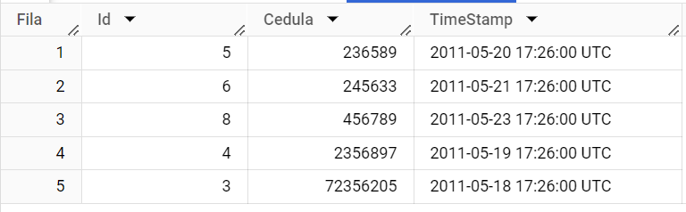

Prueba Celes#
SQL#
Modelo de datos
Crear una consulta que liste todos los enemigos que aparecen en los episodios de Doctor Who donde aparece Rose Tyler como compañero, pero no aparece David Tennant como el doctor.
La consulta propuesta para listar los enemigos es la siguiente:
SELECT EnemyName
FROM `prueba_celes.tblEpisode` AS tblEpisode
INNER JOIN `prueba_celes.tblEpisodeCompanion` as tblEpisodeCompanion
ON tblEpisode.EpisodeId = tblEpisodeCompanion.EpisodeId
INNER JOIN `prueba_celes.tblCompanion` as tblCompanion
ON tblEpisodeCompanion.CompanionId = tblCompanion.CompanionId
INNER JOIN `prueba_celes.tblDoctor` as tblDoctor
ON tblEpisode.DoctorId = tblDoctor.DoctorId
INNER JOIN `prueba_celes.tblEpisodeEnemy` as tblEpisodeEnemy
ON tblEpisode.EpisodeId = tblEpisodeEnemy.EpisodeId
INNER JOIN `prueba_celes.tblEnemy` as tblEnemy
ON tblEpisodeEnemy.EnemyId = tblEnemy.EnemyId
WHERE CompanionName = "Rose Tyler" AND DoctorName != "David Tennant"
GROUP BY EnemyName
Luego de ejecutar la consulta, la lista de enemigos obtenidas fue:
Para cada episodio de David Tennant (como el doctor), muestre para cada enemigo el numero de veces que aparecen en episodios que no son de David. (La interpretación que se hizo de este query )
SELECT tblEnemy.EnemyName, COUNT(tblEpisode.EpisodeId) AS NumApariciones
FROM `prueba_celes.tblEpisode` AS tblEpisode
INNER JOIN `prueba_celes.tblEpisodeEnemy` AS tblEpisodeEnemy ON tblEpisode.EpisodeId = tblEpisodeEnemy.EpisodeId
INNER JOIN `prueba_celes.tblEnemy` as tblEnemy ON tblEpisodeEnemy.EnemyId = tblEnemy.EnemyId
INNER JOIN `prueba_celes.tblDoctor` as tblDoctor ON tblEpisode.DoctorId = tblDoctor.DoctorId
WHERE DoctorName != "David Tennant" AND tblEnemy.EnemyId IN (SELECT tblEnemy.EnemyId
FROM `prueba_celes.tblEpisode` AS tblEpisode
INNER JOIN `prueba_celes.tblEpisodeEnemy` AS tblEpisodeEnemy ON tblEpisode.EpisodeId = tblEpisodeEnemy.EpisodeId
INNER JOIN `prueba_celes.tblEnemy` as tblEnemy ON tblEpisodeEnemy.EnemyId = tblEnemy.EnemyId
INNER JOIN `prueba_celes.tblDoctor` as tblDoctor ON tblEpisode.DoctorId = tblDoctor.DoctorId
WHERE DoctorName = "David Tennant"
GROUP BY EnemyId)
GROUP BY EnemyName
A continuación la lista de enemigos que aparecieron en capitulos con David Tennat, y la cantidad de veces que aparecieron en otros capitulos donde David Tennat no era el Doctor:
Crea una consulta que liste los capitulos de David Tennat que no comparten enemigos con ningun otro episodio que no sea de Tennant.
SELECT tblEpisode.EpisodeId, tblEpisode.Title
FROM `prueba_celes.tblEpisode` AS tblEpisode
INNER JOIN `prueba_celes.tblEpisodeEnemy` AS tblEpisodeEnemy ON tblEpisode.EpisodeId = tblEpisodeEnemy.EpisodeId
INNER JOIN `prueba_celes.tblEnemy` as tblEnemy ON tblEpisodeEnemy.EnemyId = tblEnemy.EnemyId
INNER JOIN `prueba_celes.tblDoctor` as tblDoctor ON tblEpisode.DoctorId = tblDoctor.DoctorId
WHERE DoctorName = "David Tennant" AND tblEnemy.EnemyId NOT IN (SELECT tblEnemy.EnemyId
FROM `prueba_celes.tblEpisode` AS tblEpisode
INNER JOIN `prueba_celes.tblEpisodeEnemy` AS tblEpisodeEnemy ON tblEpisode.EpisodeId = tblEpisodeEnemy.EpisodeId
INNER JOIN `prueba_celes.tblEnemy` as tblEnemy ON tblEpisodeEnemy.EnemyId = tblEnemy.EnemyId
INNER JOIN `prueba_celes.tblDoctor` as tblDoctor ON tblEpisode.DoctorId = tblDoctor.DoctorId
WHERE DoctorName != "David Tennant"
GROUP BY EnemyId)
GROUP BY tblEpisode.EpisodeId, tblEpisode.Title
ORDER BY tblEpisode.EpisodeId
De la consulta anterior resulta un listado de 32 episodios de David Tennant que no compartene enemigos con episodios de otros Doctores.

4.Eliminar registros duplicados para las cedula, basado en el Timestamp. Solo dejar el utlimo registro para cada cedula.
SELECT tblCedula.Id, tblCedula.Cedula, TimeStamp
FROM `prueba_celes.tblCedula` as tblCedula
INNER JOIN (
SELECT Cedula, MAX(TimeStamp) as LastEntry
FROM `prueba_celes.tblCedula`
GROUP BY Cedula
) as tbl
ON tblCedula.Cedula = tbl.Cedula AND tblCedula.TimeStamp = tbl.LastEntry
ORDER BY tblCedula.Cedula ASC
La tabla resultante es: 
Python#
Make a UDF which receives as a parameter a list of “Area/Location” strings. The result must be a single dataframe with all responses from the endpoint: https://worldtimeapi.org/api/timezone/+Area+Location e.g: https://worldtimeapi.org/api/timezone/America/New_York Here you can find all timezones: https://worldtimeapi.org/timezones
The dataframe must have this columns:
ID: Create a unique ID (not incremental ID)
Year: Extract from “datetime”
Month: Extract from “datetime”
Day: Extract from “datetime”
Time: “HH:MM:SS” from “datetime”
Area: Extract from “timezone”
Location: Extract from “timezone”
Iterate over at least 5 time zones with a sleep of 10 seconds after each iteration.
import pandas as pd
import requests
from time import sleep
from datetime import datetime
import uuid
lista = []
def get_timezone_location(locations_list):
for location in locations_list:
url = f"https://worldtimeapi.org/api/timezone/{location}"
response = requests.get(url)
if response.status_code == 200:
response_data = response.json()
datime = datetime.strptime(response_data.get("datetime"), "%Y-%m-%dT%H:%M:%S.%f%z")
area = response_data.get("timezone").split("/")[0]
location = response_data.get("timezone").split("/")[1]
year = datime.year
month = datime.month
day = datime.day
tiempo = str(datime.time())[0:8]
dict_time_location = {
"Id": str(uuid.uuid4()),
"Year": year,
"Month": month,
"Day": day,
"Time": tiempo,
"Area": area,
"Location": location
}
lista.append(dict_time_location)
sleep(10)
df = pd.DataFrame(lista)
return df
locations = ["Asia/Bangkok", "Europe/Rome", "Pacific/Honolulu", "America/Sao_Paulo", "Africa/Cairo"]
df_locations = get_timezone_location(locations)
df_locations
Crear una función que permita convertir números enteros en números romanos. (Para este caso se limita la función para que solo pueda convertir números de 4 digitos como maximo)
def get_romano(num_entero):
num_romanos = {"M": 1000,
"CM": 900,
"D": 500,
"CD": 400,
"C": 100,
"XC": 90,
"L": 50,
"XL": 40,
"X": 10,
"IX": 9,
"V": 5,
"IV": 4,
"I": 1
}
if (len(str(num_entero))) <= 4:
num_romano = str()
for romano, entero in num_romanos.items():
while (num_entero >= entero):
num_romano = num_romano + romano
num_entero = num_entero - entero
else:
num_romano = "Solo se pueden convertir números de 4 o menos digitos"
return num_romano
get_romano(101)
'CI'